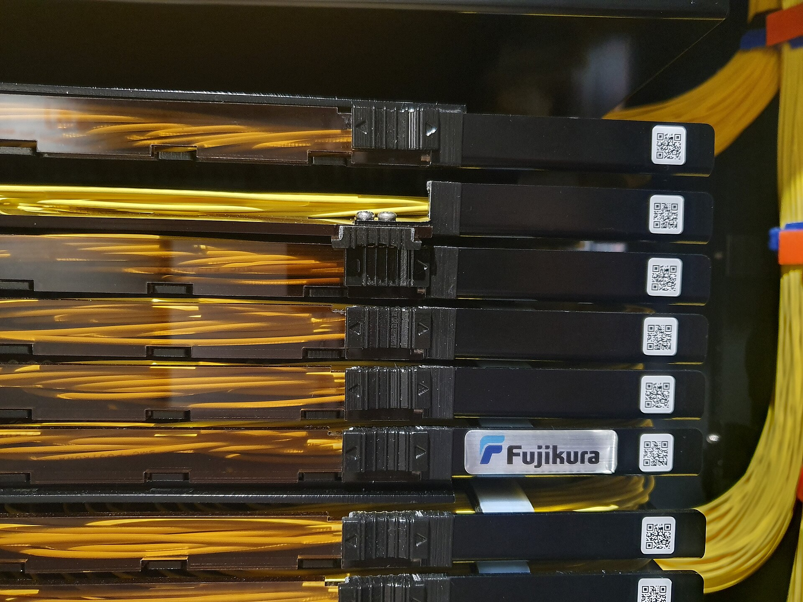
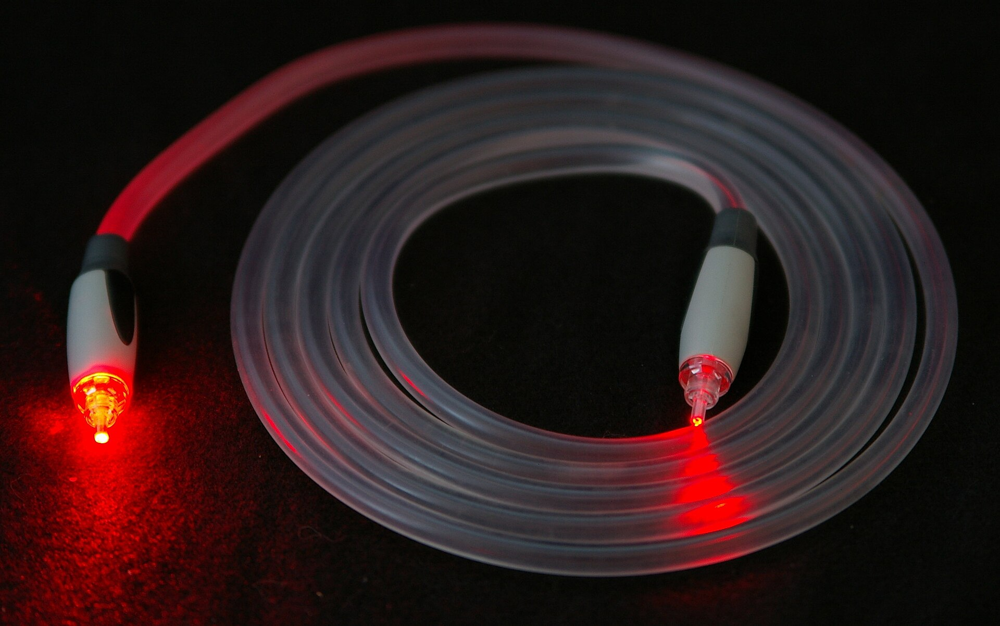

SYSTEM TOPOLOGY // CLUSTER 2026 // [A-00]
Architectural depth. Engineered signal.
High-dimensional blueprint aesthetics for deep-tech, AI research labs, and next-generation cloud infrastructure.
SCHEMATIC // TOPOLOGY_04SCALE 1:1 — NODES: 5
Geometric Routing Topology
SELECT NODE — READOUT PANELAXIOM-CORE // ROUTE_HUB
Axiom Core Mesh Hub
- Topology
- Mesh Hypercube
- Interconnect
- 400 Gbps Optical Backbone
- Throughput
- 4.8M EPS aggregated
- Status
- OPERATIONAL — SYNC ACTIVE
Cybernetic Invariants
ANNOTATION SET — 04 MARKS
[A-01] GEOMETRIC PRECISION
MODULAR BLUEPRINT GRIDS
Interfaces constructed on rigorous structural blueprints. Zero float, zero uncontrolled margins, absolute visual rhythm.
[A-02] ZERO SLOP
CYAN TELEMETRY
High-contrast cyan signals (#06B6D4) provide razor-sharp status feedback without purple gradient tropes.
[A-03] OLED MIDNIGHT
ZERO EYE STRAIN
OLED midnight canvas (#080E18) delivers glare-free immersion for mission-critical command centers.
[A-04] MOBILE INTEGRITY
44PX TOUCH ANCHORS
Touch targets scale fluidly with clamp() typography, preventing horizontal viewport drift on smaller displays.
Verified Mesh Topologies
CLUSTER REGISTRYCluster NodeTopologyInterconnectStatus
AXIOM-NODE-01Mesh Hypercube100 Gbps RoCEOPERATIONAL
AXIOM-NODE-02Torus Grid200 Gbps InfinibandOPERATIONAL
AXIOM-NODE-03Ring Star400 Gbps OpticalSYNCHRONIZING
Signal Media
RELAY-OPTIC FIELD CAPTURES

$ npx @makeskills/craftspec init
Operational across Devin, Cursor, Claude Code, Windsurf, and Copilot.